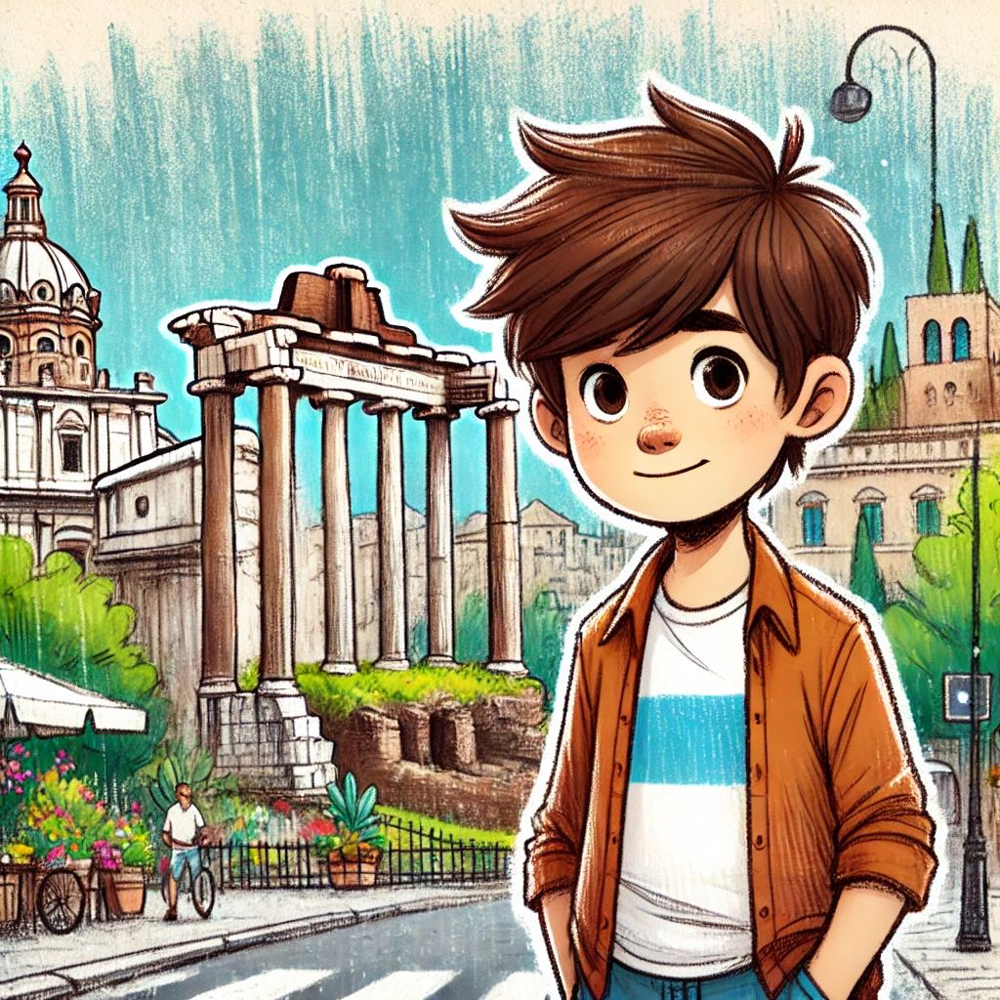

3. Dezember
Ein Tag in Rom
Die Sonne schien strahlend über Rom, und die Straßen waren voller Leben. Johann, seine Mutter und sein Vater standen auf einer belebten Piazza, die von historischen Gebäuden und kleinen Cafés gesäumt war. Die Touristenführerin hatte gerade mit einem breiten Lächeln versucht, sie für eine Stadtführung zu begeistern, aber Johanns Vater winkte ab. „Wir erkunden die Stadt lieber auf eigene Faust,“ hatte er entschieden, und so begann ihr Abenteuer.
Johann hielt den Brief seines Onkels in der Tasche seiner Shorts. Seine Gedanken kreisten immer wieder um den Mann am Flughafen, den er im Augenwinkel hinter der Zeitung gesehen hatte. Er wollte Ihnen unbedingt davon berichten, aber gerade jetzt schien nicht der richtige Moment zu sein.
Der Vater führte die Familie zielsicher zu ihrem ersten Stopp: dem Kolosseum. „Wusstet ihr, dass das Kolosseum vor fast 2.000 Jahren gebaut wurde?“ begann er mit der Begeisterung eines echten Geschichtenerzählers. „Hier fanden Gladiatorenkämpfe statt, aber auch Seeschlachten! Die Römer haben das ganze Amphitheater geflutet, um echte Schiffe darin kämpfen zu lassen.“ Johann staunte. Er stellte sich die riesige Arena vor, gefüllt mit Wasser und tosenden Menschenmengen.
Weiter ging es durch die schmalen Gassen zum Forum Romanum. Johanns Vater strahlte vor Begeisterung, als sie die weite Ebene des Forum Romanum betraten. Zerbrochene Säulen ragten wie stumme Zeugen vergangener Zeiten in den Himmel, während wildes Grün die uralten Steine umschlang. Die Sonne warf lange Schatten und verlieh dem Ort eine geheimnisvolle Aura.
„Hier, Johann, das war das Zentrum des antiken Roms,“ erklärte sein Vater, der mit einer Hand auf die Trümmer zeigte. „Vor über 2000 Jahren war das Forum der Ort, an dem die Römer Handel trieben, ihre Gesetze verkündeten und Feste feierten.“
„Das sieht eher aus wie ein Trümmerhaufen,“ meinte Johann skeptisch, doch sein Vater ließ sich nicht beirren.
„Stell dir vor, diese Steine haben Geschichte geschrieben! Dort drüben,“ er zeigte auf die Überreste eines Podiums, „stand die Rostra, die Rednerbühne. Julius Caesar hielt hier seine Reden. “
Während sie weitergingen, blieb Johann immer wieder stehen, um die gewaltigen Überreste der Säulen und Bögen zu betrachten. Er stellte sich vor, wie sich Menschen in Togas durch die belebten Straßen bewegten, während Händler ihre Waren anpriesen und Politiker mit lauter Stimme debattierten.
Ein älterer Mann, der vor einer kleinen Karte stand, sprach sie plötzlich auf Italienisch an. „Sapete che questo arco è stato costruito per celebrare una vittoria importante?“
Johann runzelte die Stirn, aber seine Mutter lächelte und übersetzte. „Er sagt, dass dieser Bogen für einen Sieg gebaut wurde. Vielleicht weiß er mehr?“
Der Mann, offenbar ein Geschichtskenner, deutete auf den Triumphbogen des Septimius Severus. „Questo arco fu costruito per commemorare la vittoria contro i Parti,“ erklärte er. „E guardate bene, ci sono scene di battaglia scolpite lì sopra.“
Johanns Vater bedankte sich und begann begeistert, die Reliefs zu erklären. Johann selbst fand die kleinen Soldaten und Pferde, die in den Stein gemeißelt waren, beeindruckend. Es war, als würde die Geschichte lebendig werden.
Nach einer Weile warf Johann einen letzten Blick zurück auf das Forum, das von den Geräuschen der modernen Stadt umgeben war, und fühlte sich seltsam verbunden mit der Vergangenheit. Sein Vater lächelte stolz. „Rom ist doch unglaublich, oder?“ Johann nickte.
Als naechstes kamen sie zur Piazza Navona, wo Straßenkünstler ihre Bilder ausstellten und ein Musiker sanfte Melodien auf der Gitarre spielte. Ein alter Mann, der am Brunnen saß, sprach sie auf Italienisch an. „Questo è il Fontana dei Quattro Fiumi,“ erklärte er und zeigte auf die Statue in der Mitte. Johanns Mutter lächelte freundlich, während der Mann erklärte, dass der Brunnen die vier großen Flüsse der Welt darstellt. Johann verstand kaum ein Wort, aber die Geste des Mannes wirkte herzlich und authentisch.
Als sie weitergingen drifteten seine Gedanken wieder ab. Er muss unbedingt seinem Onkel schreiben. Der Brief klang so dringend. Warum nur wusste er nicht, dass er einen Onkel hat? Und warum darf er seinen Eltern nichts erzählen? Es war so viel merkwürdiges passiert in den letzten Tagen. Erst der Brief seines Onkels, und dann der mysteriöse Tourist, der ihn zu verfolgen schien. Konnte das alles zusammenhängen?
„Schau dir das an, Johann!“ Die Stimme seines Vaters riss ihn aus seinen Gedanken. Sie standen vor der Engelsburg, einer massiven Festung, die sich stolz über den Tiber erhob. „Das war ursprünglich ein Mausoleum für Kaiser Hadrian, aber später wurde es eine Festung und sogar ein Gefängnis. Siehst du da oben die Statue des Engels? Der Legende nach erschien er während einer Pestepidemie, und die Seuche endete kurz darauf.“
Johann ließ seinen Blick über die beeindruckenden Mauern schweifen. Die Geschichten seines Vaters ließen ihn für einen Moment die Ereignisse am Flughafen vergessen. Doch als sie weitergingen, fiel sein Blick immer wieder suchend in die Menge.
An der Fontana di Trevi hielten sie an, um die majestätische Barockstatue zu bewundern. Ein älterer Herr, der mit einer Künstlermappe an der Seite des Brunnens saß, sprach sie auf Italienisch an. „Sapete che questa fontana è stata costruita nel XVIII secolo?“ fragte er mit einem Lächeln. „Qué?“ fragte Johann verwirrt, aber seine Mutter schaltete sich ein. „Er sagt, dass die Fontana im 18. Jahrhundert gebaut wurde,“ übersetzte sie. Der Mann fuhr fort und erzählte lebhaft, wie der Brunnen in unzähligen Filmen auftauchte und dass es Glück bringen soll, eine Münze hineinzuwerfen.
Später, nach einem Spaziergang zur Spanischen Treppe, drängte Johanns Mutter darauf, Pizza zu probieren. „Man kann doch nicht nach Italien reisen, ohne Pizza zu essen!“ rief sie aus. Sie fanden eine kleine Pizzeria mit roten Tischdecken und duftenden Holzofenpizzen. Johann war gerade dabei, seine Margarita zu genießen, als er ihn sah.
Am anderen Ende der Straße, fast versteckt hinter einem Zeitungskiosk, stand der Mann. Der gleiche Mann vom Flughafen. Er hatte ihn zweimal bemerkt: ein Mal vor dem Abflug, versteckt hinter einer Zeitung, und dann wieder nach ihrer Landung, als sie das Terminal verließen. Es war eindeutig der gleiche Mann – er trug die gleiche beige Jacke und hatte diese scharfen, prüfenden Augen, die Johann beinahe aufzuspießen schienen. Johanns Herz setzte für einen Moment aus.
„Mama, Papa,“ flüsterte er und zog an der Tischkante. „Da ist er! Der Mann vom Flughafen.“
„Welcher Mann?“ fragte sein Vater, die Stirn in Falten.
Johann holte tief Luft. „Ich habe ihn am Flughafen gesehen, vor dem Abflug. Er hat mich dann wieder in Rom beobachtet.“
Die Reaktion seiner Eltern überraschte ihn. Seine Mutter verschluckte sich fast an ihrem Getränk, und sein Vater stellte seine Pizza hastig zur Seite. „Bist du dir sicher?“ fragte sein Vater ernst, seine Stirn in Sorgenfalten gelegt.
„Ja, ganz sicher,“ sagte Johann, verunsichert von der plötzlichen Anspannung. „Und... er hat mir ein Päckchen gegeben. Warum? Wer ist er?“
Seine Mutter rief abrupt. „Was? Was für ein Päckchen?“
„Er hat gesagt, ich soll es nach Griechenland bringen,“ gestand Johann kleinlaut. „Aber ich habe es zu Hause gelassen, ich wusste nicht, was ich damit machen sollte.“
Seine Eltern sahen sich an, ihre Gesichter voller Sorge. Sein Vater legte ihm beruhigend eine Hand auf die Schulter. „Johann, das ist wichtig. Hättest du uns das nicht früher sagen können?“
„Ich dachte, es wäre nicht so schlimm,“ murmelte Johann. „Aber jetzt verfolgt er uns, oder? Was soll ich tun?“
„Wir... reden später darüber,“ sagte seine Mutter leise und tauschte einen besorgten Blick mit seinem Vater. „Jetzt sollten wir zurück ins Hotel gehen.“
Johann merkte, dass etwas nicht stimmte. Es fühlte sich an, als ob die Stimmung auf einmal viel dunkler geworden war.
Was soll Johann tun?
1 Johann erzaehlt seinen Eltern vom Brief seines Onkels 2 Johann schreibt heimlich seinem Onkel, um zu erklaeren warum er nicht kommen kann und um von dem seltsamen "Touristen" zu berichten. 3 Johann versucht, den Touristen, der ihn verfolgt, ausfindig zu machen und mehr ueber ihn herauszufinden